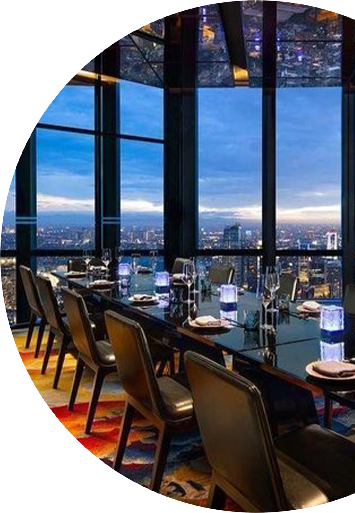
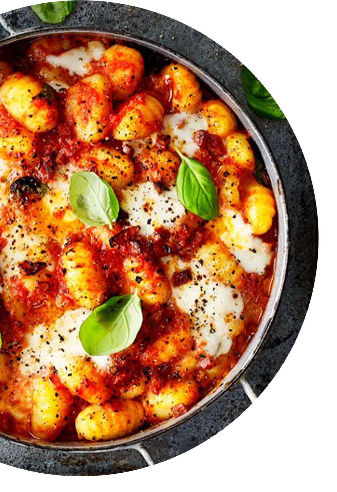

| HOMEPAGE | | |
MENU | | |
CONTACTS |
| . | |
Jack’s Restaurant and Kitchen is the brainchild of Ryan and John McElhinney. We are located at 96 Isabella Street (behind Southwark Tube) SE1 8DD. The original Jack’s was opened in Ireland in 1970 by their father Jack (now sunning himself in Spain) so the boys decided to pay tribute to their father by re-opening the original almost forty years on. Jack's is a restaurant for birthdays, catching up with friends, lunch on our patio in the sunshine, craft beer, cocktails and delicious Thai food. |
 |
|  | Our authentic Thai food "Johnny Rice" is served Tuesday - Friday lunch. From 12th April grab your Takeaway boxes, order your drinks and plot up at a table in our outdoor area to enjoy your afternoon. |
| . | |
There are no limitations on booking sizes, you no longer need to wear a mask in the venue and standing drinking will make a welcome return. If you fancy stopping by, propping up the bar and watching our bartenders make the best cocktails in Waterloo, be our guests! If you’re looking for a spot for after-work beers in Southwark then be sure to drop in. |
|
At Jacks Bar we pride ourselves on serving a mix of classic cocktails and our own exciting creations. We experiment constantly to find new flavours/textures to tickle your taste buds and update our list regularly to reflect the season and those that might pair well with our Thai food. |
Tel : 020 7928 0678 |
| |
Address : 96 ISABELLA ST, LONDON SE1 8DD |